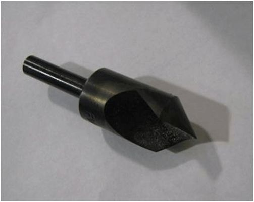

Suspension - Multiple Noises From Front Of Vehicle
TECHNICALBulletin No.: 10-03-08-002B
Date: June 14, 2011
Subject: Squeak/Creak/Rumble or Rattle Noise Coming from Front of Vehicle During Low Speed Maneuvers in Cold Ambient Temperatures (Enlarge Upper Inside Diameter (ID) of Strut Jounce Bumper)
Models:
2007-2011 Cadillac Escalade, Escalade ESV, Escalade EXT
2007-2011 Chevrolet Avalanche, Silverado LD, Suburban LD, Tahoe
2007-2011 GMC Sierra LD, Sierra Denali, Yukon, Yukon XL LD, Yukon XL Denali
Applies to 2011 Vehicles Built Before October 1, 2010
Supercede:
This bulletin is being revised to add a vehicle build date. Please discard Corporate Bulletin Number 10-03-08-002A (Section 03 - Suspension).
Condition
Some customers may comment on a squeak, creak, rumble or rattle noise coming from the front of the vehicle or it may sound like it is coming through the front of the dash, during low speed maneuvers. The noise may be most noticeable in ambient temperatures of 0°C (32°F) or colder. The noise will most likely be heard during small to medium suspension travel such as in parking lot maneuvers, over small bumps, or when stopping.
Cause
This condition may be caused by the front strut jounce bumper inside diameter to the piston rod of the strut experiencing a slip/stick condition during certain cold ambient temperature conditions.
Correction
1. Test drive the vehicle in the same range of ambient temperatures of 0°C (32°F) or colder and the same low speed maneuvers mentioned by the customer in order to verify the concern.
2. Using Chassis Ears, verify that the noise is most noticeable at the upper strut mount area. The concern may be on one or both sides of the vehicle.
3. By jouncing the vehicle, the noise or vibration can be isolated using a stethoscope, and may possibly be felt in the vicinity.
4. Raise and support the vehicle. Refer to Lifting and Jacking the Vehicle in SI.
5. Remove the LH and RH strut assemblies from the vehicle. Refer to Shock Absorber and Spring Assembly Replacement in SI.
6. Disassemble the coil spring and top mount assembly from each strut. Refer to Shock, Shock Component, and/or Spring Replacement in SI.
7. Remove the jounce bumper (5) from the top mount assembly (3).
8. Secure the jounce bumper upright in a bench vise. Only clamp the lower portion of the bumper to allow the upper portion of the ID to remain at rest.

Note
A standard drill bit will not cut the ID of the jounce bumper. The jounce bumper will comply and stretch around the bit, then return after the drill is removed.
9. Prepare a single flute countersink bit or a bladed cutting bit, or equivalent, in a die grinder, Dremmel Tool, or equivalent.
Note
Do Not attempt to drill out the jounce bumper while attached to the strut top mount assembly. The bumper must be removed from the top mount assembly.
Note
Do Not attempt to drill out the jounce bumper from the lower end toward the upper end, as this could affect characteristics of the jounce bumper.
10. Enlarge the Upper ID (1) from the top side of the jounce bumper to the following dimensions:
- Diameter of enlarged ID: 16 mm
- Depth of enlarged ID: 15 mm
11. Ensure that the ID of the jounce bumper is as smooth as possible and free of loose material. If necessary, an Exacto knife, or equivalent, can be used to carefully trim the edge and remove any loose material. The photo above shows a jounce bumper with the enlarged upper ID (1) as compared to the original ID (2).
Note
Ensure that the jounce bumper is fully seated to the top mount assembly.
12. Install the jounce bumper to the top mount assembly. Ensure that the jounce bumper is secure to the top mount.
13. Assemble the coil spring and top mount to each strut. Refer to Shock, Shock Component, and/or Spring Replacement in SI.
14. Install the LH and RH strut assemblies to the vehicle. Refer to Shock Absorber and Spring Assembly Replacement in SI.
15. Move the vehicle outdoors to allow it to return to ambient temperature.
16. Test drive the vehicle under the same conditions to verify the repair.
Warranty Information
For vehicles repaired under warranty, use the table.

Disclaimer